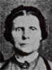

Niels Nielsen and Ane Marie Olsen Family Group
Home
Histories
Charts
Photos
Maps
Restricted
News
Info
Contact
 symbol is a link to a history,
symbol is a link to a history,  a source, and the chart
a source, and the chart  symbol is a link to a family group chart.)
symbol is a link to a family group chart.)|
Husband's Parents Niels Pedersen |
----> |
Niels Nielsen Born (CHR) 27 Feb 1799 Assentorp, Stenmagle, Soro, Denmark Died 4 Jan 1875 Terslose, Holbaek, , Denmark Ane Marie Olsen Born Died 15 May 1873 Terslose, Holbaek, , Denmark Married 18 Nov 1820 Terslose, Holbaek, Denmark | ||
|
Wife's Parents Ole Svendsen |
| 1 | Jacob Nielsen Born 26 Aug 1821 Terslose, Holbaek, Denmark Died 29 Mar 1908 Spring City, Sanpete, Utah, USA Married Ellen Hansen |
2 |
Ane Nielsen Born 24 Dec 1822 Munke-Bjaergby, Soro, Denmark Died 16 Mar 1903 Aurora, Sevier, Utah, USA Married Hans Sorensen 9 Sep 1848 Terslose, Holbaek, Denmark
|
| 3 | Karen Sophie Nielsen Born 15 May 1825 Terslose, Holbaek, , Denmark Died Married Jens Hansen 20 Nov 1846 Terslose, Holbaek, Denmark Married Peder Larsen |